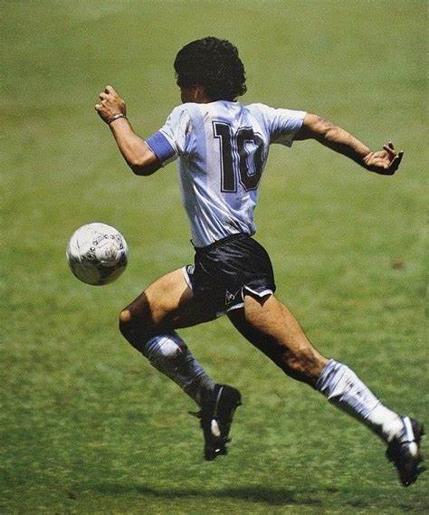
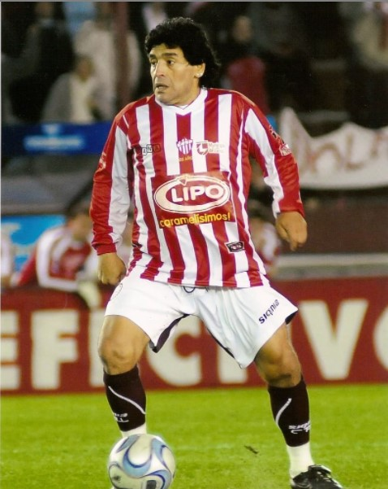
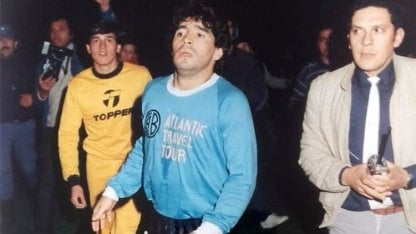
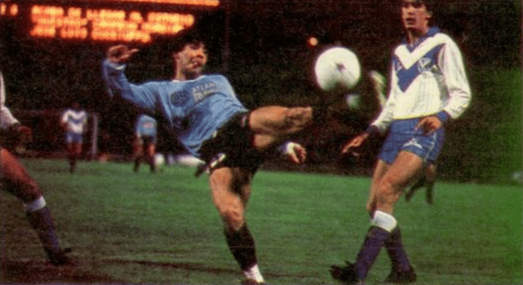

⚽ Ascenso Y El Diez ⚽
🏆 Gracias Diego 🏆

Diego Armando Maradona
La noche en que Maradona jugó para Talleres🔟
2008
El día que el Diego se puso la de Talleres de Escalada para jugar un partido amistoso, allá por el año 2008.
Fue en cancha de Lanús, en un partido benéfico para recaudar fondos por el levantamiento de la quiebra. Diego jugó 25 minutos con la camiseta Albirroja. Y el hincha jamás lo olvida.
Diego Maradona es del pueblo. El 10 tuvo un gran gesto en junio de 2008. Talleres de Remedios de Escalada transitaba una de los peores momentos de su historia con la quiebra. Y para recaudar fondos, se disputó el Partido de la Amistad entre Lanús y el Tallarín, cotejo que se jugó en el estadio del primero.

Diego Armando Maradona
El Diego y Belgrano. 🏴☠️🔟
1986
Un día muy recordado para todo el pueblo Pirata. Esa noche el 10 jugaba un amistoso con fines benéficos, calzándose la casaca celeste.
El dato de color es que aquel partido fue el primero que disputó después de conseguir el mundial de México 86
Fue tan inesperado que muchos no lo creyeron y el estadio no se llenó: el flamante rey del fútbol pasó de jugar la final de México 86 contra Alemania a un amistoso benéfico en Córdoba entre Belgrano -entonces en la B- y Vélez, recién anunciado dos días antes. Ocurrió el 10 de julio, curiosamente 35 años despues la pulga lograria su primer titulo con la seleccion mayor.

